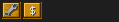
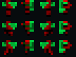
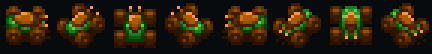

1.0.543 — notes de version
Correctif d’affichage Linux : détection des écrans par XRandR, plein écran sur un seul moniteur, taille de fenêtre choisie conservée et résolutions plus petites de nouveau disponibles dans les options. Les anciennes dimensions dépassant le moniteur sont corrigées. PulseAudio explicitement compilé et vérifié pour le démarrage sous Mint. Remplacement de la 1.0.543 ; protocole 18, sauvegardes 9836 conservées.
Linux, Windows et AppImage Mint
Version 1.0.543 : protocole 18, sauvegardes 9836. Les nouvelles unités et les correctifs sont intégrés et vérifiés dans les paquets Linux et Windows.
- Vente des bâtiments : 50 % du prix de construction, sans stockage requis ; bouton $ après l’emplacement d’amélioration. Règle activée par défaut dans Tornie, Tornie Lite, ArcaKev et ArcaKev Lite. Un succès et deux statistiques suivent les ventes.
- Parties multijoueurs hors coop : contrôle allié et construction sur terrain allié réglables séparément par l’hôte, entre maisons de la même équipe.
- Compteur de moissonneuses : option désactivée par défaut dans Tornie et Tornie Lite, activée dans les autres modes.
Nouvelles unités — paquets vérifiés
- Kleshmersh : Troopers lance-flammes par défaut hors Vanilla, disponibles par tirage des technologies en Chaos. Rocket Trike au niveau 3 / usine légère amélioration 1 ; Flame Quad au niveau 5 / amélioration 2 ; retrait du Sonic Trike de sa production normale.
- Harkonnen : Troopers lance-flammes séparés des Troopers ordinaires, au niveau 7 avec une IX, hors Vanilla.
- Infanterie à gaz Ordos et Tharpique : WOR et Worfinery, IX requise ; soigne les alliés et applique l’effet du Deviator aux ennemis.



Vérifications locales réussies : tests moteur/réseau, sept modes, 36 rendus de sprites sans fond magenta en 1×/2×/3×, soins alliés, production IX et sauvegardes.
Notes complètes : unités, teintes, étoiles et Saboteur Neutral.